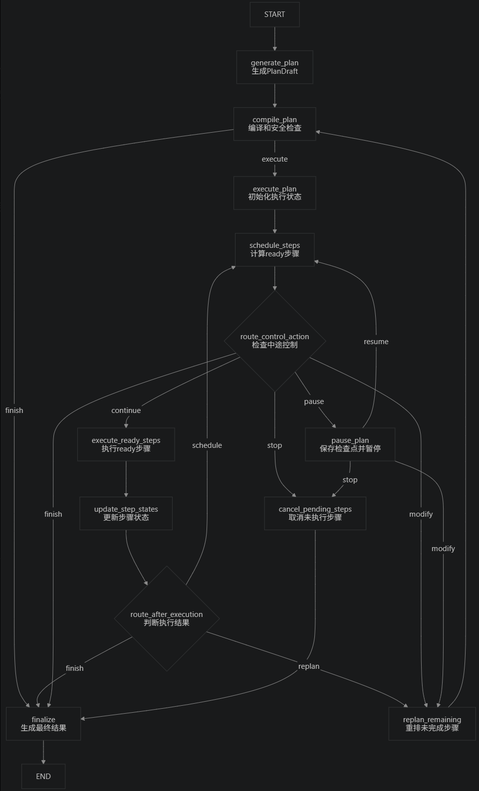

正在载入原文…
ORIGINAL DOCUMENT · 1297 LINES
基于现有Motion Agent的复杂任务编排
复杂自然语言一次生成PlanDraft，经compile_plan安全编译后，由LangGraph节点调度ready步骤并调用原有execute_task能力。

复杂自然语言一次生成PlanDraft，经compile_plan安全编译后，由LangGraph节点调度ready步骤并调用原有execute_task能力。
